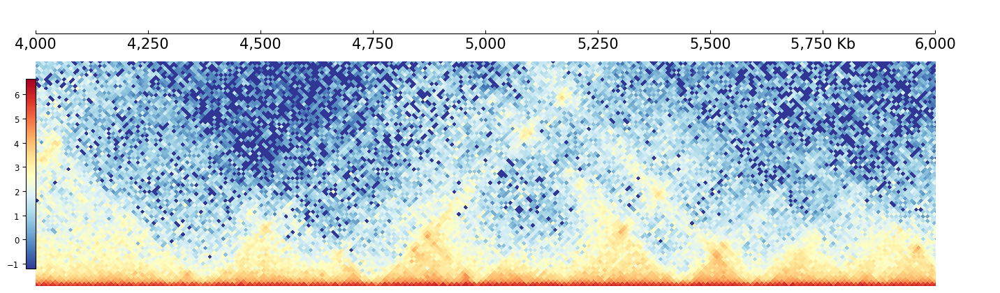
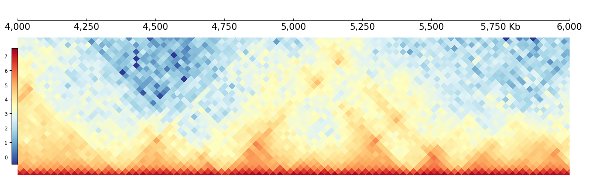
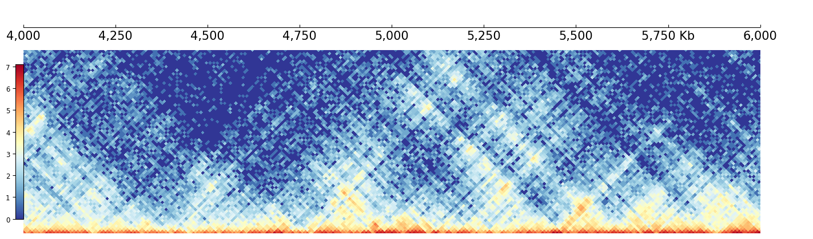
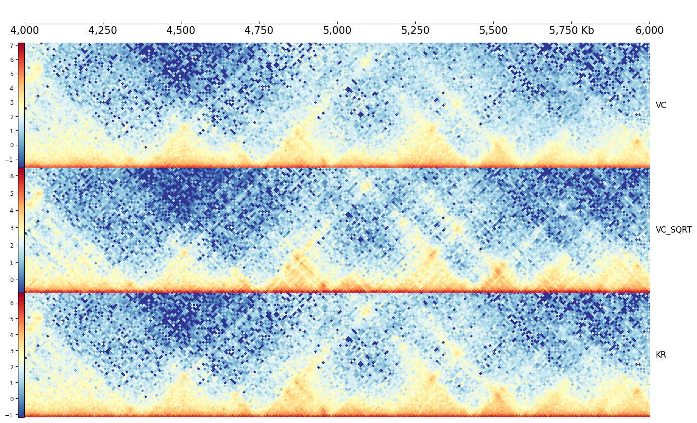
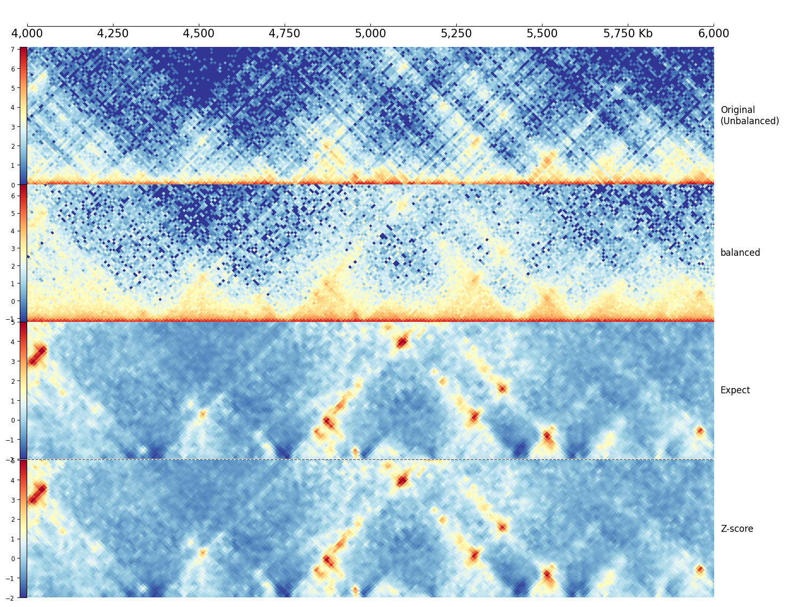

Resolution, Balance and Normalize
[1]:
import coolbox
from coolbox.api import *
[2]:
coolbox.__version__
[2]:
'0.4.0'
Resolution
In normal, CoolBox will select proper resolution automatically from your multi-resolution .hic or .mcool file, but you can also specify it by your self.
[3]:
test_hic = "../../../tests/test_data/dothic_chr9_4000000_6000000.hic"
10Kb resolution:
[4]:
dhic = DotHiC(test_hic, cmap="RdYlBu_r", depth_ratio=.5, resolution=10000)
frame = XAxis() + dhic
frame.plot("chr9:4000000-6000000")
[4]:

25Kb resolution:
[5]:
dhic = DotHiC(test_hic, cmap="RdYlBu_r", depth_ratio=.5, resolution=25000)
frame = XAxis() + dhic
frame.plot("chr9:4000000-6000000")
[5]:

Balance
You can use balance to control do matrix balance or not. The default behavior do balance, we can turn off it:
[6]:
dhic = DotHiC(test_hic, balance=False, cmap="RdYlBu_r", depth_ratio=.5, resolution=10000)
frame = XAxis() + dhic
frame.plot("chr9:4000000-6000000")
[6]:

In addition, .hic file support three kinds of matrix balance method:
VC
VC_SQRT
KR (default)
[7]:
with Feature(resolution=10000), Feature(depth_ratio=0.4), Color("RdYlBu_r"):
dhic_vc = DotHiC(test_hic, balance="VC")
dhic_vcs = DotHiC(test_hic, balance="VC_SQRT")
dhic_kr = DotHiC(test_hic, balance="KR")
frame = XAxis() + \
dhic_vc + Title("VC") + \
dhic_vcs + Title("VC_SQRT") + \
dhic_kr + Title("KR")
frame.plot("chr9:4000000-6000000")
[7]:

Normalize
CoolBox can perform three kinds of normazation on the matrix(balanced or non-balanced):
total: Divide the total value of the local region.
expect: Divide the mean value alone the specifed distance dialog.
zscore: (matrix - mean) / std
[8]:
with Feature(resolution=10000, depth_ratio=0.4, color="RdYlBu_r"):
dhic_b = DotHiC(test_hic, balance="KR")
dhic_ub = DotHiC(test_hic, balance=False)
with Feature(transform=False, norm=False, gaussian_sigma=0.7, max_value=5, min_value=-2):
dhic_exp = DotHiC(test_hic, normalize='expect')
dhic_z = DotHiC(test_hic, normalize='zscore')
frame = XAxis() + \
dhic_ub + Title("Original\n(Unbalanced)") + \
dhic_b + Title("balanced") + \
dhic_exp + Title("Expect") + \
HLine() + \
dhic_z + Title("Z-score")
frame.plot("chr9:4000000-6000000")
[8]:

[8]: